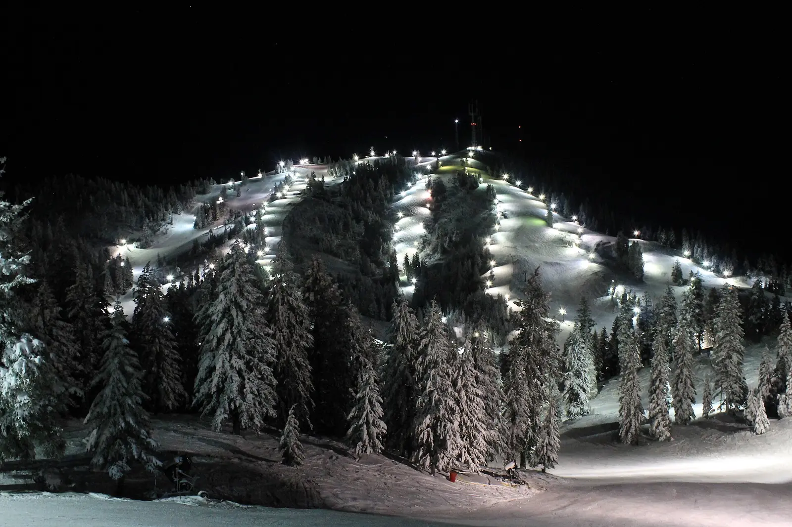

Bogus Basin, Boise, Idaho · Ski conditions
Bogus Basin Conditions and Webcams Today
Webcams, opening weekend and kid facts: lessons from age 4, lesson prices, a weekend bus. It is 16 miles up Bogus Basin Road from Boise, about an hour from downtown, the resort says.
Researched with AI (Miles Rowan) · sources linked and dated · How we check
Bogus Basin's own status
Not open yetOpens Sat, Nov 21 and Sun, Nov 22 (Bogus Basin's conditions and webcams page, read Nov 17).
Our webcam read
No cam read from us yet. Cam reads show here only when a recent one has passed a separate automated accuracy check.

Cam by cam
The 3 Bogus Basin cam views our reader uses, in our own descriptive words (see Bogus Basin's own cam page, as listed in our cam feed Nov 17): Snow stake, Base area, Summit lift top. Once our reads start, each cam's last read time shows here.
Plan the day with kids
- Opening: Bogus Basin's conditions page lists opening Sat, Nov 21 and Sun, Nov 22; it doesn't say which lifts or runs. Its hours page still showed every lift closed, with no winter hours posted yet.
- Childcare: Bogus Basin's lesson info page says "We do not have daycare services"; a parent must stay reachable by phone during lessons.
- Lessons: Daily kids group lessons take ages 4 to 6 (ski only) and 7 and up (ski or snowboard), about 1 hr 45 min (Terrain Based Learning: 2 hours). Bogus Basin's FAQ says lessons don't include a lift ticket unless stated.
- Mogul Mouse (ages 4 to 6): A 4-lesson ski series for potty-trained kids 4 to 6, from Sat, Dec 12 (weekend, holiday and midweek sessions to March). Not canceled for weather or snow; fees non-refundable. Check-in: Mouse House, Bogus Creek Lodge.
- Ticket ages: Day tickets come in Child (6 and under), Junior (7 to 12), Teen (13 to 17) and Adult (18 to 69) prices, but the page shows no dollar amounts; the ticket shop doesn't allow automated reading.
- Tubing: Weekends only. Riders must be 3 or older and 36 inches or taller, one per tube; no refunds unless the hill can't run. Its page (last updated in March) still said "closed for the season" when we read it Nov 17.
Lesson, pass and bus prices on Bogus Basin's pages, read Nov 17:
- Kids daily group lesson (Learn to Ski or Ride, or Terrain Based Learning): $59 per child
- Kids Next Steps daily lesson: $79 per child, plus a lift ticket add-on: $35 (ages 4 to 6), $25 (7 to 12), $40 (13+)
- Rental add-on with a daily lesson: $30 to $40, by lesson and age
- Mogul Mouse 4-lesson series (ages 4 to 6): $349 lessons only; $539 with unlimited rentals and a child winter season pass
- Child (ages 0 to 6) Winter season pass: $39 retail
- Weekend and holiday bus from the valley: $10 cash, one-way or round trip
Lesson prices from Bogus Basin's group lesson pages; the pass price is the retail price in its 2026/27 season pass guide (the sale ran in February and March; the guide doesn't say if retail passes are still sold); the bus fare is from its getting-here page. Mogul Mouse fees are non-refundable. Day lift ticket prices are not shown on the pages we could read.
Lift tickets and lessons: Bogus Basin's pages we could read show no day lift ticket prices, so we can't sum a family-of-4 day; check its ticket shop. See Bogus Basin lift ticket ages.
From Bogus Basin Mogul Mouse, Bogus Basin lesson pre-arrival info, Bogus Basin lesson FAQ, Bogus Basin 2026/27 season pass guide, Bogus Basin alpine group lessons, Bogus Basin getting here and Bogus Basin operating hours, read Nov 17.
Getting there from Boise
- Car: Harrison Boulevard becomes Bogus Basin Road at Hill Road, then 16 miles up to the mountain. Bogus Basin lists a 35 mph limit, no passing lane, and recommends snow tires, 4WD/AWD or chains; it asks drivers of cars not ready for winter to stay off the road.
- Bus: Saturdays, Sundays and holidays, Dec 21, 2026 to Mar 28, 2027 (no bus on opening weekend; cash only); pickups in Nampa 6:30am, Meridian 7am, Eagle 7:30am, Boise 8am; it leaves the mountain at 4pm, "no exceptions". First come, first served; riders 12 and up may ride alone.
- Parking: six lots; the page lists no parking fee. On peak weekends and holidays, cars with 3 or more people get the front half of Lot #1 from 9am. Free park-and-ride lots downtown on weekends and holidays.
- Address: 1754 Bogus Basin Rd., Boise, ID 83629. It is 20 miles from Boise Airport.
If the snow is thin
- Mogul Mouse lessons are not canceled for weather or snow conditions, and fees are non-refundable; changes need 48 hours' notice.
- Tubing gives no refunds unless the hill can't run, and no rescheduling.
From Bogus Basin Mogul Mouse and Bogus Basin tubing hill, read Nov 17.
How we read the cams: a program looks at Bogus Basin's public webcam pictures and notes only what a picture can show: fresh snow, snow cover, snowmaking, moving lifts, how busy the base looks, visibility and the snow stake. Each read shows its time; after 90 minutes it is marked older, after 6 hours it is hidden. We never say whether terrain is safe, icy, groomed or open; Bogus Basin's own report decides that. We don't show the cam pictures or count people.
Sources: Bogus Basin conditions and webcams · Bogus Basin operating hours · Bogus Basin alpine group lessons · Bogus Basin getting here · Bogus Basin Mogul Mouse · Bogus Basin lesson pre-arrival info · Bogus Basin lesson FAQ · Bogus Basin 2026/27 season pass guide · Bogus Basin tubing hill (read Nov 17). We haven't skied Bogus Basin.